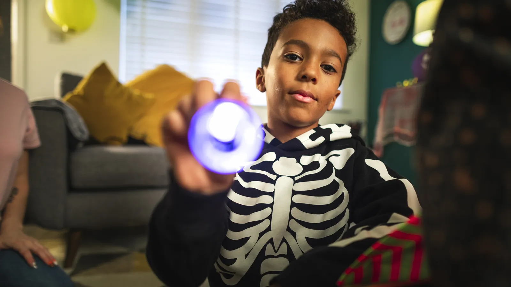

BriteKind: a technical use case for a camera-based kids app
BriteKind is an iOS game that lets a child paint on the screen by waving a regular flashlight in front of the camera. This guide walks founders and product owners through how it was scoped, how the light tracking works and how to take an app like it to market.
What is BriteKind?
BriteKind turns an iPad or iPhone into a light-painting canvas. The child stands in front of the camera in a dim room and moves a flashlight. The app tracks the bright spot frame by frame and draws a smooth line along its path. A dock at the bottom holds seven colours, a clear button and a screenshot button, and the whole canvas can be mirrored to a TV through Apple TV.
The audience is children aged 3 to 6, which shapes every decision in this guide: no reading required during play, no accounts, a parent gate in front of settings and purchases, and camera frames that never leave the device.
What does the play screen look like?
The play screen is the whole product. The camera feed fills the screen with a 50% dark overlay so painted colours stand out. The top 90% is the drawing area, and the bottom 10% is the dock, where the light leaves no trail. The child selects a dock item by holding the light still over it, so the game can be played without touching the device.
| Element | Behaviour in the MVP brief | Why it matters |
|---|---|---|
| Drawing area (about 90%) | Light leaves a smooth Bezier trail | The core loop has to feel instant |
| Dock (about 10%) | Clear, 7 colours, Screenshot; selected by a long pause of the light | Hands-free control keeps the child away from the screen |
| Logo, top left | Opens settings by touch only, behind a math question | Keeps young children out of settings and purchases |
| Selection feedback | Short animation and a sound per action | Pre-readers need sound and motion, not labels |
Why is BriteKind a useful use case for founders?
BriteKind packs several hard problems into a very small app: real-time computer vision on a phone, two sets of permissions, a children's audience with strict store rules, a time-based paywall and a big-screen mode. Each one is a decision a founder or product owner has to make on purpose, and each one is easy to get wrong in a first version.
The scope was deliberately tight. The brief set a one-week build window with mock-ups and prototypes shared along the way, which only works when the feature list is short and every screen is specified in writing. Our guide on how long an MVP takes to build explains which scope decisions make a short timeline realistic and which ones quietly double it.
Write the screen-by-screen spec before you hire a studio.
BriteKind's brief described every screen, every state, every sound file and every colour code. That is what makes a fixed-scope, fixed-week build possible and keeps the change requests small.
What does designing for ages 3 to 6 change?
Young children cannot read menus, do not understand permission prompts and tap anything that moves. The American Academy of Pediatrics' policy statement Media and Young Minds encourages co-viewing and active, creative play over passive screen time. BriteKind fits that framing: the child moves around the room, a parent is usually nearby, and the TV mode turns it into a shared activity.

Apple's guidance on designing safe and age-appropriate experiences sets the platform expectations for kids apps, including parental gates and data collection limits. Read it before writing the spec, not after the first App Review rejection.
How this guide is organized
The next pages go deeper in the order a product owner needs: how the light tracking and drawing engine work, what a kids app needs for privacy, permissions and App Review, how to present the app on the App Store, and how the 30-minute free play model turns into revenue. If you are building something similar, the r/iOSProgramming community is a good place to sanity-check camera and rendering questions with working iOS developers.